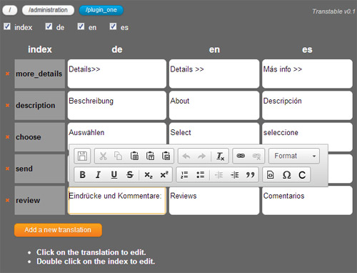

What is Transtable?
Transtable is a simple web interface for editing translations for your PHP application. Translations are stored in PHP arrays. For each language it will generate one .php file with translations that you can include in your application.
This is an example of a translation file generated by Transtable:
<?php
$t['main_title'] = 'My Site';
$t['main_subtitle'] = 'Some subtitle';
$t['show_on_map'] = 'Show on map...';
$t['description'] = 'About';
$t['days_short']['mon'] = 'Mon';
$t['days_short']['tue'] = 'Tue';
$t['months_short']['1'] = 'Jan';
$t['months_short']['2'] = 'Feb';
Note that an array that holds translations can be multidimensional which makes it very convenient when using in loops or iterating in templates.
Home page: http://code.google.com/p/transtable
UI description

Buttons to change working directory are placed in the top left corner. First button is for directory specified with translations_root option and the others are subdirectories.
Below buttons are checkboxes to show or hide columns with translations.
The table contains translations, one column per language. Each row contains the name of the translation (index) and the value in different languages.
You can click on the translation to edit and use basic HTML formatting. The value you enter will be saved automatically when you click on another translation.
To edit index double click on the first cell.
Setup
Transtable is written in PHP, so to run it you'll have to have a web server with PHP enabled.
- Extract files from a downloaded archive to a folder accessible by the web server
After that you can open web browser and navigate to URL where Transtable is installed and it should be working, you should see some sample translations.
- Change configuration options and create an empty file for each language
Open config.php file for changing configuration options or create a new file named config_override.php to override options from config.php.
Create an empty file for each language in the directory set by translations_root option and name it to match pattern set by file_name_pattern option. For example en.php, de.php, fr.php.
Note: if you downoaded .zip archive there are three sample files (en.php, de.php, es.php) in the translations directory. You can delete them.
- Set file permissions
Files with translations have to be writable by the web server.
Configuration options
Transtable reads configuration options from config.php file and from config_override.php file if you create one. With config_override.php you override options from config.php. Using config_override.php is useful if you want to checkout and update from SVN or GIT repository.
Options values set in the $TTCFG['fireflies'] array:
| Option | Default | Description |
|---|---|---|
| translations_root | /<TRANSTABLE_ROOT>/translations | Absolute file system path to a directory containing the translation files. You can organize the files in subdirectories. If you enter <TRANSTABLE_ROOT> it will be replaced with the absolute path to the directory where Transtable is installed. |
| file_name_pattern | ..\.php | Regular expression pattern that translation files names must match. Transtable will search only for files with names matching this pattern in all subdirectories of the directory specified with translations_root option. |
| var_name | t | The name of the PHP array that holds translations in generated .php files. |
| page_title | Transtable | UI page title |
| enable_edit_index | 1 | Enable editing translation indexes (first column). Set to 0 to disable. |
| array_delimiter | | | Delimiter in the translation index for multi dimensional arrays. |
| enable_delete_translation | 1 | Enable deleting translations. Set to 0 to disable. |
| enable_add_translation | 1 | Enable adding new translations. Set to 0 to disable. |
| new_lines | PHP_EOL | New lines type in saved translation files. |
Options values set in the $TTCFG array:
| Option | Default | Description |
|---|---|---|
| include_css | Array of relative web paths to CSS files which will be included on Transtable page. This is useful if you want to add some styles for texts in the translation table. For example, to add a formatting similar to the one at the web site where the text will be shown. |
How I use Transtable
For localizing my PHP applications I’ve used simple PHP associative arrays and I’ve simply included the file with translations for desired language into my application. So, I’ve created Transtable with the purpose of editing those files.
I set up one instance of the application and Transtable just for translators. Transtable is set to work with the files in a folder where the application stores its translation files, and so, after a translator has edited a part of translation, he can immediately see the changes in the application.
I put a simple authorization on the site with .htaccess and send URL of the Transtable to translators and they can start translating. In my opinion, the fact that all translators can edit all languages shouldn't be a problem because they are trusted users. Also, it works like a feature, because if you can see the translations in all languages that will give you a better understanding of the context. In addition, you can improve or fix translations made by others.
Then I commit the changed translation files to a repository and update the production site.
Demo
Check it out here. Note that saving is disabled so when you reload the page all changes will be lost.